Reference
Guide
What is out there, and what to do about it. The numbers come from the game's own
data tables rather than from guesswork, so they are the values the game actually
rolls against — Spd is a percentage of a normal walking pace, and
Scent is how well it tracks you, not how far it can smell.
The dead
They want to eat brains, and they fumble around chasing anything alive. Most are slower than a living human, but none of them tire and they are quite resistant to damage — you know, they are already dead. Some are dumb. Some follow tracks or remember where they last saw that tasty meatbag. Some break doors, windows and furniture to get to you. Some call the others over. Some can turn your dead friends into company.
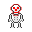
Red-eyed skeletontougher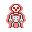
Red skeleton"Kill it with fire!" Shamblerslow, but smells
you
Shamblerslow, but smells
you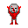
Dark-eyed shamblermeaner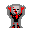
Dark shamblerthe usual horror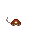
Zombie ratsewers, very quick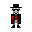
Zombie master"Nice glasses."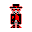
Zombie lord"Lord of Death."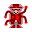
Zombie prince"Prince of Death."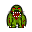
The Sewers Thing400 HP. Do not disturb.| Undead | Spd | HP | Atk | Dmg | Def | Scent | Says |
|---|---|---|---|---|---|---|---|
| Skeleton | 100 | 10 | 16 | 4 | 6 | 0 | Quite annoying. Like a fly. |
| Red-eyed skeleton | 150 | 12 | 18 | 6 | 8 | 0 | Really annoying. Like a big fly. |
| Red skeleton | 200 | 14 | 20 | 8 | 10 | 0 | REALLY annoying! Kill it with fire! |
| Shambler | 50 | 80 | 20 | 10 | 10 | 40 | BRAINS! |
| Dark-eyed shambler | 50 | 120 | 24 | 12 | 14 | 60 | MORE BRAINS! |
| Dark shambler | 50 | 160 | 28 | 14 | 16 | 80 | MORE NUTRITIVE CEREBRAL MATTER! |
| Zombie rat | 200 | 6 | 12 | 2 | 6 | 100 | Large undead sewers rodent. |
| Zombie master | 50 | 120 | 20 | 10 | 16 | 100 | Nice glasses. |
| Zombie lord | 50 | 180 | 24 | 10 | 16 | 100 | Lord Of Death. |
| Zombie prince | 50 | 240 | 28 | 16 | 16 | 100 | Prince Of Death. |
| The Sewers Thing | 33 | 400 | 28 | 12 | 8 | 5 | A relative of The Swamp Thing? |
Every undead has 99 stamina, which is the game's maximum: they never tire. Read the three shambler lines as one ladder — the same 50 speed, climbing steadily in health, attack and damage. Rain does not shorten an undead's field of view, but it does make the scents they follow decay faster, which is the one weather effect that touches them at all.
The living
Civilians want one thing: survive. They mind their own business and see you as just another regular joe, so do not expect them to treat you differently than that other dude over there. They are quite independent, easily scared unless led by someone they trust, and useful to watch in a headless-chicken kind of way — or a reliable way to frustrate your escape, barricading or fight plan.
| Living | Spd | HP | Atk | Dmg | Def | FoV |
|---|---|---|---|---|---|---|
| Man | 100 | 30 | 20 | 10 | 20 | 8 |
| Woman | 100 | 28 | 20 | 8 | 22 | 8 |
| Policeman, national guard, CHAR guard, black op, biker, gangster | 100 | 30 | 20 | 10 | 20 | 8 |
| Feral dog | 100 | 15 | 30 | 10 | 15 | 8 |
They have different names, different looks, and a gun, and they appear to be very aggressive indeed: they do not hesitate to shoot anyone near their offices. You should not get near one unless you are prepared. They are also doing their duty cleaning up this mess, and they do not have time for your requests.
Day, night and weather
Weather can change daily, improving or worsening, and some of it lands on you. At night your field of view — the distance at which you can see — shrinks and you tire faster. Undeads are not affected by day or night at all.
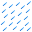
Heavy rainFoV −2| Weather | What it does |
|---|---|
| Sunny, cloudy | No effect. |
| Rain | Livings lose 1 tile of field of view. Scents decay faster, so anything tracking by smell loses its trail sooner. Firearms jam 3% of the time instead of 1%. |
| Heavy rain | Livings lose 2 tiles of field of view. Scents decay even faster. |
Rain also has a chance to put out fires, burning cars included. Going outside at night under heavy rain with no flashlight and zombies around does not sound very safe. It also has one small mercy: undeads are not affected by field-of-view loss, so the dark does not blind them the way it blinds you.
The places
Shops are the early game. Business and deliveries do not work well during an apocalypse, so it is first arrived, first served — sooner or later there will be nothing left.

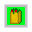
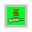
Districts
The city is divided into districts, numbered by their coordinates on the city map starting at 0-0 for the north-west one. Each is a different map, and you move between them by exiting through a border. The districts you are not standing in keep going without you.
Press I for city info to see what you have pieced together about the map.
Sewers
A sewer network runs under every district, linked to the surface and to the neighbouring networks. Find a ladder and climb down. It is dark down there and you should bring light.
You have heard an urban legend about something large living down there.
Subway
A subway line runs east to west through the middle of the city, and only the districts it stops at are linked by it — a fast way across town if you dare turn the lights off.
Reach it from a station on the surface, and go down the stairs. Like the sewers, it is dark.
Off limits
The CHAR agency is open 24/7. CHAR offices are private property and you are not supposed to go there, which has never stopped anyone.
Your home town is the headquarters of the C.H.A.R. Corporation, and there are persistent rumours about them.
What to loot
The first two runs are decided by what you can carry and what you can hit things with. Priorities, roughly in order: something to eat, something to heal with, a way to fight at range, and then a door you can shut.
Food
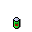
Canned food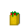
GroceriesMedicine
Ranged
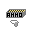
Pistol ammoMelee
Barricades and traps
Armour and light
A stench killer spray erases the scent trail the dead follow, which buys you minutes rather than safety. Barricading a door does the same against anything slower than a rat.
This guide is the quick version. Every action, command, skill, item category, follower and directive is documented in the full manual — the original text by the game's author, reformatted for the web and unaltered.